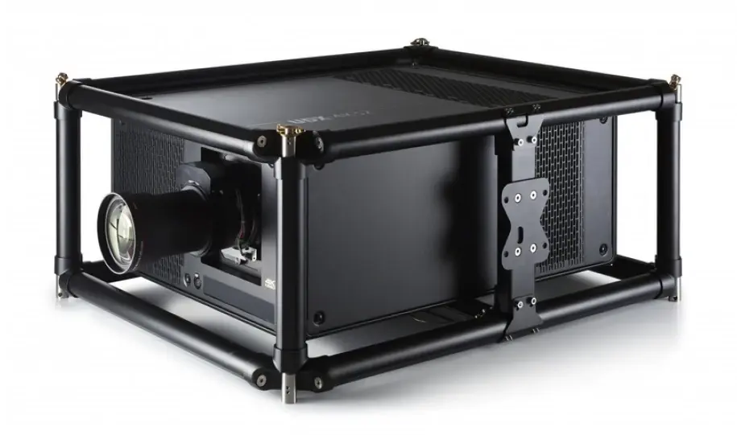

Проекторы для кинотеатров
Серии кинематографических проекторов Barco воплощают лучшие технологии воспроизведения изображений, разработанные компанией. Выдающаяся яркость, исключительный контраст и цветопередача помогут приковать взгляды зрителей в зале к происходящему на экране. При этом стоимость эксплуатации проекторов Barco существенно ниже аналогов за счет длительного срока службы и экономичности необслуживаемого лазер-фосфорного источника света. Проекторы серии поддерживают высокое разрешение контента и могут работать совместно для формирования невероятно четкого и яркого изображения на составном экране. А простое подключение и набор объективов обеспечивают взаимозаменяемость и универсальность проекторов.